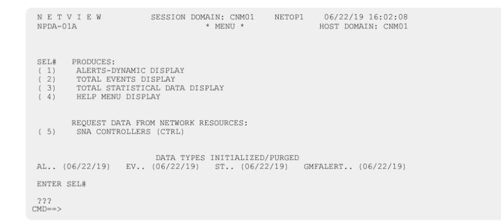

section leads you through a series of commands to test the NetView program that you just started.
Run the commands in exactly the order presented. If you make errors, or issue the commands out of
sequence, the contents of the network logs and the results of the operator tests are different from the
examples you see in this chapter.
To verify the NetView installation, issue instructions that test the installation. If you cannot start the tests,
ensure that you correctly performed all the installation procedures in the NetView program directory and
all the installation procedures in this book.
1. Your data can differ from the panels in the examples because the display format depends on the type
of terminal that you are using.
2. If you customized your system to suppress messages, remember to check the system and Canzlog
logs for critical information that might be suppressed during the verification of your NetView
installation.
3. For a list of tasks and automated tasks that are initialized by default, see Table 14 on page 95 and
Table 15 on page 97.
To start the test of the NetView program, enter the following command:
LOGON APPLID(CNM01)
A panel similar to Figure 9 on page 73 is displayed.
Figure 9. IBM Z NetView Logon Panel
If the value of the SECOPTS.OPERSEC statement in the CNMSTYLE member is SAFDEF, or if the OPERSEC
operand was specified as SAFDEF on the REFRESH command, no PROFILE field is shown on the Logon
panel and the HARDCOPY LOG field does not have a default value.
In the PROFILE field, system symbolic substitution is performed on records read from the DSIOPF
member in the DSIPARM data set and the specified profile member in the DSIPRF data set. The
&DOMAIN symbolic variable that is supplied with the NetView product is also included in the substitution.
process. The substitution is performed after comment removal but before record processing. After
substitution, comments are also removed. Substitution is always performed on the &DOMAIN symbolic
variable, unless substitution was disabled when NetView was started.
To log on, enter the following text in both the OPERATOR ID field and in the PASSWORD field:
NETOP1
A panel similar to Figure 10 on page 74 is displayed.
Figure 10. NetView Initial Message Display
The information that is displayed on this panel is contained in member CNMNEWS in the
NETVIEW.V6R3M0.SDSIOPEN data set. The date and time at the top of your panel will differ from the
examples.
Usage Note: When verifying your installation, be sure to clear the console between each step. In Figure 10 on page 74, the 3 asterisks at the bottom of a panel indicate a held screen.
Clearing the screen
To clear the screen and go to the NetView main menu, press the Enter key and continue to press the Enter
key until the main menu is displayed (Figure 11 on page 75).
CNM1NETV IBM Z NetView V6R3 Main Menu
Enter a command (shown highlighted or in white) and press Enter.
TO SEE YOUR KEY SETTINGS, ENTER 'DISPFK'
Action===>
Figure 11. NetView Main Menu Panel
Displaying help information
To go to the NetView help facility, enter the following command:
HELP NETVIEW
A panel similar to Figure 12 on page 75 is displayed.
CNMKNEEW NETVIEW HELP FACILITY MAIN MENU
| Select | To get information about |
|---|---|
| 1 | Operator's overview of the NetView Program |
| 2 | Using the NetView Help Desk for operators |
| 3 | Using NetView online message help |
| 4 | Using command and command list help |
| 5 | Finding help on VTAM in NetView |
| 6 | Finding help on RODM (Resource Object Data Manager) |
| 7 | Finding help on GMFHS (Graphic Monitor Facility host subsystem) |
| 8 | Help for the NETVIEW stage (NetView Pipelines) |
| A | All NetView commands |
| I | Finding help in the Index |
| P | Help for PIPE syntax |
Type a value (1 to 8, A, I, or P) and press ENTER.
TO SEE YOUR KEY SETTINGS, ENTER 'DISPFK'
Action===>
Figure 12. NetView Help Facility Main Menu
Press the F2 or F3 key twice to return to the command facility.
For help information on the command facility, enter the following command:
HELP
A panel similar to Figure 13 on page 76 is displayed.
CNMKNEEW NETVIEW HELP FACILITY MAIN MENU
| Select | To get information about |
|---|---|
| 1 | Operator's overview of the command facility |
| 2 | Using the terminal access facility (TAF) |
| 3 | The command facility screen |
| 4 | Command facility commands and command lists |
| 5 | Field level help |
Type a number (1 through 5) and press ENTER.
TO SEE YOUR KEY SETTINGS, ENTER 'DISPFK'
Action===>
Figure 13. Command Facility Help Menu Panel
Select option 4 to display the command facility commands. A panel similar to Figure 14 on page 76 is
displayed.
CNMPNL1.EUYCLIST HELP NCCF COMMANDS LINE 0 OF 284
*------------------------------- Top of Data------------------------------------------------------------------*
| ACQ | Acquire a resource........................................................................A2 |
| ACT | Activate VTAM resources ...........................................................A3 |
| ADDCMD | Add or replace user-written commands...........................A6 |
| AFTER | Schedule a command to run later .......................................A7 |
| AGTBRW | Browse the network log from the NetView EMA . A11 |
| AGTSESMG | Display SNA sessions from the NetView EMA...............A12 |
| AGTTCPC | Display TCP/IP data from the NetView EMA.................A13 |
| AINQ | Display translation tables....................................................A14 |
| ALLOCATE | Allocate an MVS data set.........................................................A19 |
| APPLS | Display minor nodes .....................................................................A41 |
| APPLSPEN | Display sessions state..............................................................A42 |
| APSERV | Accept commands/messages from secure programs A44 |
| ASSIGN | Define operators and groups .................................................A45 |
| AT | Schedule a command to run ......................................................A48 |
TO SEE YOUR KEY SETTINGS, ENTER 'DISPFK'
CMD==>
Figure 14. Using NetView Command and Command List Help Panel
Press the F3 key twice to return to the command facility.
Enter the CLEAR command to refresh the command facility screen.
Verifying that your automation table is active
To display the name of the active NetView automation table, enter:
AUTOTBL STATUS
If the default NetView automation table (DSITBL01) was loaded during NetView initialization, a panel
similar to Figure 15 on page 76 is displayed.
Figure 15. Displaying the active automation table
Enter the CLEAR command to refresh the command facility screen.
Displaying session information
To display the status of all operator terminals, NetView-NetView task (NNT) sessions requested by other
NetView systems, and information about your session, enter the following command:
WHO
A panel similar to Figure 16 on page 77 is displayed.
Figure 16. Information about Your NetView Session Panel
Press the ENTER key to release any messages being held by the command facility. The three asterisks
(***) at the bottom of the screen indicate that there are more messages to display.
Enter the CLEAR command to refresh the command facility screen.
Displaying PF key settings
To display the PF key settings, enter the following command:
DISPFK
The PF key settings are displayed for the component from which you entered the command. A panel
similar to Figure 17 on page 78 is displayed.
CNMKWIND OUTPUT FROM DISPFK LINE 0 OF 32
*------------------------------- Top of Data------------------------------------------------------------------*
DISPLAY OF PF/PA KEY SETTINGS FOR NCCF
| KEY | ----TYPE---- | -----------COMMAND------------ | SET-APPL |
|---|---|---|---|
| PA1 | IMMED,IGNORE | RESET | NETVIEW |
| PA2 | IMMED,IGNORE | AUTOWRAP TOGGLE | NETVIEW |
| PA3 | IMMED,IGNORE | RETRIEVE AND EXECUTE | NETVIEW |
| PF1 | IMMED,APPEND | HELP | NETVIEW |
| PF2 | IMMED,APPEND | GO | NCCF |
| PF3 | IMMED,IGNORE | RETURN | NETVIEW |
| PF4 | IMMED,APPEND | DISPFK | NETVIEW |
| PF5 | IMMED,APPEND | BROWSE LOG | NETVIEW |
| PF6 | IMMED,APPEND | ROLL | NETVIEW |
| PF7 | IMMED,IGNORE | BACK | NETVIEW |
| PF8 | IMMED,APPEND | FORWARD | NETVIEW |
| PF9 | IMMED,IGNORE | PIPE HELDMSG | CONSOLE DELETE | NCCF |
| PF10 | IMMED,APPEND | WINDOW | NETVIEW |
| PF11 | IMMED,IGNORE | HOLD | NCCF |
| PF12 | IMMED,IGNORE | RETRIEVE | NETVIEW |
TO SEE YOUR KEY SETTINGS, ENTER 'DISPFK'
CMD==>
Figure 17. PF Key Settings for the Command Facility
Use the F8 key to page forward through the contents.
Press the F3 key to return to the command facility.
Viewing operator identifiers and passwords
To view NetView operator identifiers and passwords, enter the following command:
BROWSE DSIOPF
A panel that is similar to Figure 18 on page 78 is displayed.
SCROLL ==> CSR
----+----1----+----2----+----3----+----4----+----5----+----6----+----7----+----Figure 18. Display of Operator Identifiers and Passwords
Use the F8 key to page forward through the contents.
Press the F3 key to return to the command facility panel.
Using the terminal access facility (TAF)
You also need to verify your installation of the NetView system by entering the NetView program through
the terminal access facility (TAF). Use the BFSESS command list to start a full -screen session with
another subsystem. If you are using subarea 01 for your installation, enter:
BFSESS CNM01
Press ENTER again to display the NetView logon panel, if needed.
To log on to the NetView system, enter:
OPER4
in the OPERATOR ID field, and
OPER4
in the PASSWORD field. A panel similar to Figure 19 on page 79 is displayed
The following information lists the enhancements for IBM Z NetView
V6R3, formerly known as IBM Tivoli NetView for z/OS.
This information also lists the enhancements for IBM Z NetView
for Continuous Availability V6R3, formerly know as IBM Tivoli NetView
Monitoring for GDPS if it is running in the NetView program.
Figure 19. Entering the Command Facility after Logging On
To go to the NetView main menu, press the Enter key and continue to press the Enter key until the
NetView main menu is displayed.
Press the F3 key to go to the command facility.
Enter the CLEAR command to refresh the screen.
To view the operator identifiers and passwords, enter the following command:
BR DSIOPF
BR is a synonym for BROWSE. A panel similar to Figure 20 on page 80 is displayed.
NetView V6R3 - NM NetView CNM01 OPER4 06/22/19 15:56:32
| -CNM01 | BNH236E 'OPER4' IS NOT AUTHORIZED TO USE THE KEYWORD 'DSIPARM' AND VALUE 'DSIOPF' COMBINATION |
| C CNM01 | DSI238I BR COMMAND FAILED, INVALID PARAMETER: DSIOPF |
| -CNM01 | BNH237E THE KEYWORD 'DSIPARM' AND VALUE 'DSIOPF' ARE PROTECTED BY COMMAND IDENTIFIER '*.*.READSEC.DSIPARM.*' IN 'TBLNAME=CNMSCAT2' |
| C CNM01 | CNM337I VIEW : CODE 12 - YOU ARE NOT AUTHORIZED TO BROWSE 'DSIOPF'. THE DSIKVS MACRO RESULTED IN A NONZERO RETURN CODE. |
-------------------------------------------------------------------------------------------------------------------------------------
???
Figure 20. Command Facility Message Panel
Usage notes:
1. OPER4 does not have the authority to display the DSIOPF member.
2. Command authorization is being performed by using the NetView command authorization table
(CNMSCAT2). If a SAF product (such as RACF) is being used for security, the information in Figure 20
on page 80 will be different.
To end your OPER4 operator session, enter:
LOGOFF
at the cursor.
You return to a panel similar to Figure 21 on page 80 (the command facility for the NETOP1 operator).
NetView V6R3 - NM NetView CNM01 OPER4 06/22/19 15:56:32
| -CNM01 | BFSESS CNM01 |
| -CNM01 | DSI498I SRCLU HAS BEEN DEFAULTED TO SRCLU = TF01#000 FOR FLSCN SESSION TO APPLID = CNM01 |
| -CNM01 | DSI496I FLSCN SESSION BETWEEN APPLID = CNM01 AND SRCLU = TF01#000 ENDED |
-------------------------------------------------------------------------------------------------------------------------------------
???
Figure 21. Command Facility Panel for Operator NETOP1
Enter the CLEAR command to refresh the command facility screen.
Displaying common global variables
To list the common global variable names that begin with CNMSTYLE.NV, enter the following command:
QRYGLOBL COMMON VARS=CNMSTYLE.NV*
A panel similar to Figure 22 on page 80 is displayed.
NetView V6R3 - NM NetView CNM01 OPER4 06/22/19 15:56:32
* CNM01 QRYGLOBL COMMON VARS=CNMSTYLE.NV*
' CNM01
NETVIEW GLOBAL VARIABLE INFORMATION
BNH103I COMMAND ISSUED AT: 06/22/19 15:59:00
BNH061I
BNH032I COMMON GLOBAL VARIABLES
BNH036I GLOBAL VARIABLE NAME: GLOBAL VARIABLE VALUE:
BNH061I ---------------- ------------------
BNH039I CNMSTYLE.NVROLE NETWORK
BNH039I CNMSTYLE.NV2I NM
BNH035I NUMBER OF VARIABLES FOUND: 2
BNH061I
BNH037I NETVIEW GLOBAL VARIABLE INFORMATION COMPLETE
Figure 22. Command Facility Panel to Display Common Global Variables
Browsing Canzlog
The consolidated audit, NetView program, and z/OS log (Canzlog) provides a comprehensive means of
displaying the following kinds of information:
• MVS messages
• NetView messages
• Broadcast messages
• DOMS
• Command echoes
• Trace and audit messages
To browse the Canzlog log, enter the following command:
BROWSE CANZLOG
A panel similar to Figure 23 on page 81 is displayed.
Canzlog TAG=(NVMSG,MVSMSG,DOM) 06/22/19 15:57:07 -- 15:59:20
15:57:07 DSI238I BR COMMAND FAILED, INVALID PARAMETER: DSIOPF
15:57:07 BNH237E THE KEYWORD 'DSIPARM' AND VALUE 'DSIOPF' ARE PROTECTED BY COMM
15:57:07 CNM337I VIEW : CODE 12 - YOU ARE NOT AUTHORIZED TO BROWSE 'DSIOPF'. TH
15:57:28 LOGOFF
15:57:28 CNM493I CNMSDCA : #0000023 : CNME8251
15:57:28 DSI081I OPERATOR OPER4, LOGOFF PROCEEDING: TERMINAL = TF01#000
15:57:30 DSI496I FLSCN SESSION BETWEEN APPLID = CNM01 AND SRCLU = TF01#000 E
15:58:38 CLEAR
15:59:00 QRYGLOBL COMMON VARS=CNMSTYLE.NV*
15:59:00 BNH031I NETVIEW GLOBAL VARIABLE INFORMATION
BNH103I COMMAND ISSUED AT: 06/22/19 15:59:00
BNH061I
BNH032I COMMON GLOBAL VARIABLES
BNH036I GLOBAL VARIABLE NAME: GLOBAL VARIABLE VALUE:
BNH061I
BNH039I CNMSTYLE.NVROLE NETWORK
BNH039I CNMSTYLE.NV2I NM
BNH035I NUMBER OF VARIABLES FOUND: 2
BNH061I
BNH037I NETVIEW GLOBAL VARIABLE INFORMATION COMPLETE
15:59:20 BROWSE CANZLOG
TO SEE YOUR KEY SETTINGS, ENTER 'DISPFK'
CMD==>
Figure 23. View Canzlog data
Usage notes:
1. You can use the BR LOG command to display messages that match a filter set by the DEFAULTS or
OVERRIDE commands for CANZLOG.
2. You can use the BR filtername command to display messages that match the specified filter name.
You can display a list of defined filters by using the LIST CZFILTER command.
Press the F3 key to return to the command facility. Enter the CLEAR command to refresh the command
facility screen.
You can issue a PING command to an IP host from the command facility. For example, to ping IP address
1.2.3.4 with a host name of my.host.name.com enter the following command from the command facility:
PING 1.2.3.4
A panel similar to Figure 24 on page 82 is displayed.
Usage note: For the PING command to resolve IP host names, the resolver configuration must be correct
in TCP/IP or the SYSTCPD DD statement in CNMPROC (CNMSJ009) must identify the location of your
TCP/IP configuration data.
NetView V6R3 - NM NetView CNM01 NETOP1 06/22/19 16:00:04
* CNM01 PING 1.2.3.4
C CNM01 BNH765I Pinging my.host.name.com at 1.2.3.4 with 3 packets of
length 16 bytes
C CNM01 BNH767I 16 bytes received from 1.2.3.4: seq=1 in 2ms
C CNM01 BNH767I 16 bytes received from 1.2.3.4: seq=2 in 2ms
C CNM01 BNH767I 16 bytes received from 1.2.3.4: seq=3 in 1ms
C CNM01 BNH769I 3 packets sent, 3 packets received, 0.00% packet loss
C CNM01 BNH770I Round trip times from 1 to 2 ms, averaging 1ms
---------------------------------------------------------------------------------------------------------------
??? Pings of 1.2.3.4 averaging 1ms
Figure 24. PING command output
To display a menu of available IP Management functions, enter the following command:
NETVIP
A panel similar to Figure 25 on page 82 is displayed.
CNM4NVIP NetView IP Management Functions Menu
Type the number or move the cursor to a function and press Enter
1. Ping a device (PING)
2. Trace the route to a device (TRACERTE)
3. Check TCP connection status (IPSTAT)
4. Work with IP traces (IPTRACE)
for SP:_________________________
5. Manage IP Active Monitoring (IPMAN)
6. Issue SNMP commands (NVSNMP)
7. Manage Sysplex
8. Manage DVIPA
9. Check the status of an IP port (TESTPORT)
10. Show EE information for a VTAM resource (DIS PATH)
Command ===>
F1=Help F3=Return F6=Roll
F12=Cancel
Figure 25. IP Management functions menu
Usage note: To select a function, you can enter the number associated with the function and press Enter,
or move the cursor to the function description and press Enter.
To display a list of the NetView sysplex discovery commands, move the curser to option 7 and press
Enter. A panel similar to Figure 26 on page 83 is displayed.
CNM4NVSP NetView Sysplex Management Functions Menu
Type the number or move the cursor to a function and press Enter
1. Stack configuration and status (CNMSSTAC)
2. IP stack interfaces (CNMSIFST)
3. NetView configuration and status (CNMSNVST)
4. OSA channel and ports (CNMSOSAP)
5. HiperSockets adapters (CNMSHIPR)
6. Telnet servers (CNMSTNST)
7. Telnet server ports (CNMSTPST)
Command ===>
F1=Help F3=Return F6=Roll
F12=Cancel
Figure 26. NetView Sysplex Management Functions Menu Panel
You can view configuration and status information about the NetView domains known to this NetView
program. To do this, move the cursor to option 3 and press enter. A panel similar to Figure 27 on page
83 is displayed.
CNMKWIND OUTPUT FROM CNMSNVST LINE 0 OF 3
*------------------------------- Top of Data------------------------------------------------------------------*
BNH495I NUMBER OF NETVIEW APPLICATIONS: 1
# Domain Status Total-CPU % Total-Stor Role Sysplex-Role Syspl
1 CNM01 ACTIVE 0.02 11157 NETWORK MCAP 1
*------------------------------ Bottom of Data--------------------------------------------------------------*
TO SEE YOUR KEY SETTINGS, ENTER 'DISPFK'
CMD==>
Figure 27. Configuration and status information
Usage note: Not all IP management functions are enabled by default. To fully enable IP management,
see IBM Z NetView Installation: Configuring Additional Components.
Press the F3 key until you return to the command facility panel.
Enter the CLEAR command to refresh the command facility screen.
To generate an alert and record the alert to the hardware monitor database, enter the following
command:
GENALERT N TYPE=PERM MAJ=1 MIN=1 ACT=1 HIER=ATCHM003,COMC PRID=3725
A panel similar to Figure 28 on page 83 is displayed
NetView V6R3 - NM NetView CNM01 NETOP1 06/22/19 16:01:54
* CNM01 GENALERT N TYPE=PERM MAJ=1 MIN=1 ACT=1 HIER=ATCHM003,COMC PRID=3725
-------------------------------------------------------------------------------------------
???
Figure 28. GENALERT command output
To go to the hardware monitor component, enter the following command:
NPDA
A panel similar to Figure 29 on page 84 is displayed.
Figure 29. Hardware Monitor Main Menu
Note: If the sample job CNMSJ005 is used to initialize a newly allocated hardware monitor (NPDA)
database cluster, the database initialization dates shown on the hardware monitor main menu NPDA-01A
will be 05/30/96.
Examine the dates in the AL, EV, and ST fields. The dates cannot be asterisks. Your dates might not match
the dates in Figure 29 on page 84.
Use the ALERTSH (ALH) command to display the alerts recorded in the hardware monitor database. To
see a panel similar to Figure 30 on page 84, enter:
ALH
N E T V I E W SESSION DOMAIN: CNM01 NETOP1 06/22/19 16:02:16
SEL# DOMAIN RESNAME TYPE TIME ALERT DESCRIPTION:PROBABLE CAUSE
( 1) CNM01 ATCHM003 COMC 16:01 INITIALIZATION FAILURE:RING INTERFACE COUPLER
ENTER SEL# (ACTION),OR SEL# PLUS M (MOST RECENT), P (PROBLEM), DEL (DELETE)
???
CMD==>
Figure 30. Alerts History Panel
If no alerts were recorded, you receive message BNJ925I:
BNJ925I NO DATA EXISTS FOR COMMAND SPECIFIED
Press the F3 key twice to return to the command facility panel.
To go to the session monitor component, enter the following command:
NLDM
A panel similar to Figure 31 on page 85 is displayed.
NLDM.MENU PAGE.1
SEL# DESCRIPTION
( 1) LUNAME LIST LIST OF ALL ACTIVE LOGICAL UNIT NAMES
( 2) SLUNAME LIST LIST OF ACTIVE SECONDARY LOGICAL UNIT NAMES
( 3) PLUNAME LIST LIST OF ACTIVE PRIMARY LOGICAL UNIT NAMES
( 4) PUNAME LIST LIST OF ACTIVE PHYSICAL UNIT NAMES
( 5) CPNAME LIST LIST OF ACTIVE CP AND SSCP NAMES
( 6) DOMAIN LIST LIST OF NLDM DOMAINS
( 7) ER LIST LIST OF ACTIVE EXPLICIT ROUTES
( 8) VR LIST LIST OF ACTIVE VIRTUAL ROUTES
ENTER: H OR HELP FOR INFORMATION ON THE USE OF NLDM
HELP NLDM COMMANDS FOR NLDM COMMAND LIST
ENTER SEL# OR COMMAND
CMD==>
Figure 31. Session Monitor Main Menu
Note: If the sample job CNMSJ005 is used to initialize a newly allocated session monitor (NLDM)
database cluster, the database initialization date shown on the session monitor main menu NLDM.MENU
will be 07/17/87.
To display a list of all inactive NetView sessions enter:
SESS * * INACT
A panel similar to Figure 32 on page 85 is displayed.
NLDM.MENU PAGE.1
NAME:* DOMAIN:CNM01
-------------------------------------------------------------------------------------------------------------------------------------------------------
***** PRIMARY **** ***** SECONDARY ****
| SEL# | NAME | TYPE | DOM | NAME | TYPE | DOM | STARTTIME | ENDTIME |
|---|---|---|---|---|---|---|---|---|
| (1) | CNM0100F | LU | CNM01 | TF01#000 | LU | CNM01 | 08/2215:56:13 | 08/2215:57:29 |
| (2) | NT68MVS | SSCP | CNM01 | CNM0100F | LU | CNM01 | 08/2215:56:13 | 08/2215:57:29 |
| (3) | CNM01 | LU | CNM01 | TF01#000 | LU | CNM01 | 08/2215:56:13 | 08/2215:56:13 |
| (4) | NT68MVS | SSCP | CNM01 | TF01#000 | LU | CNM01 | 08/2215:56:13 | 08/2215:57:29 |
| (5) | CNM01 | LU | CNM01 | NT68L703 | LU | CNM01 | 08/2215:52:07 | 08/2215:52:07 |
END OF DATA
ENTER SEL# (CONFIG), SEL# AND CT (CONN. TEST), SEL# AND STR (TERM REASON
CMD==>
Figure 32. Session List Panel
Press the F3 key twice to return to the command facility panel.
Logging Off
To log off from the NetView program, enter:
logoff
You completed the basic installation and configuration of the NetView program.
You might want to consider additional configuration to extend the base NetView functions.
| Table 12. Additional Configuration and Customization Options | Task | Refer to... |
|---|---|---|
| Configuring the NetView program for your environment | IBM Z NetView Installation: Configuring Additional Components | |
| Configuring additional NetView functions For each function that you implement, test to make sure that it works correctly. | “NetView Functions” on page 89 | |
| Installation, configuration, and setup for NetView REST Server | IBM Z NetView Installation: Configuring Additional Components | |
| Installing the NetView program on the same LPAR as an existing NetView program | Running Multiple NetView Programs in the Same LPAR in IBM Z NetView Installation: Configuring Additional Components | |
| Using the NetView program for IP management | IBM Z NetView Installation: Configuring Additional Components IBM Z NetView IP Management | |
| Using the NetView program for sysplex management | IBM Z NetView IP Management | |
| Implementing graphics support | IBM Z NetView Installation: Configuring Graphical Components | |
| Extending automation Make sure that your automation tables are updated and correctly specified using AUTOCMD statements in the CNMSTYLE member. The DSITBL01 automation table is required for the NetView program and provides basic automation statements to respond to messages and management services units (MSUs). Use %INCLUDE members to define changes for your environment and add these changes before any automation statements that are provided with the NetView program. Code any local customization with CONTINUE(YES). | IBM Z NetView Automation Guide | |
| Using installation exits | IBM Z NetView Programming: Assembler or IBM Z NetView Programming: PL/I and C | |
| Writing command processors | IBM Z NetView Programming: Assembler or IBM Z NetView Programming: PL/I and C | |
| Installing the IBM Z NetView for Continuous Availability product | IBM Z NetView for Continuous Availability Configuring and Using the GDPS Continuous Availability Solution | |
To run the NetView program in production, consider the following steps:
• Make sure that the V6.3.0 modules are active in the production system.
Chapter 7. Verifying the Installation 87
• If you are using the NetView status monitor or AMI function, make sure that the V6.3.0 SCNMLNK1
members are in use by VTAM.
• Allocate the VSAM data sets for the production LPAR.
• Complete any tuning and customization tasks your system requires. See “Extending the Base
Functions” on page 85 for more information.
• If you are using the NetView program for system automation, review your system automation planning
and verify that any new operating procedures are ready for implementation.
For each administration task that you prepared, test to ensure that it was done correctly. When you are
satisfied, the NetView program is ready for full production.
Note: If you resume production under a previous release of the NetView program, cancel the NetView
subsystem job and close the V6.3.0 application